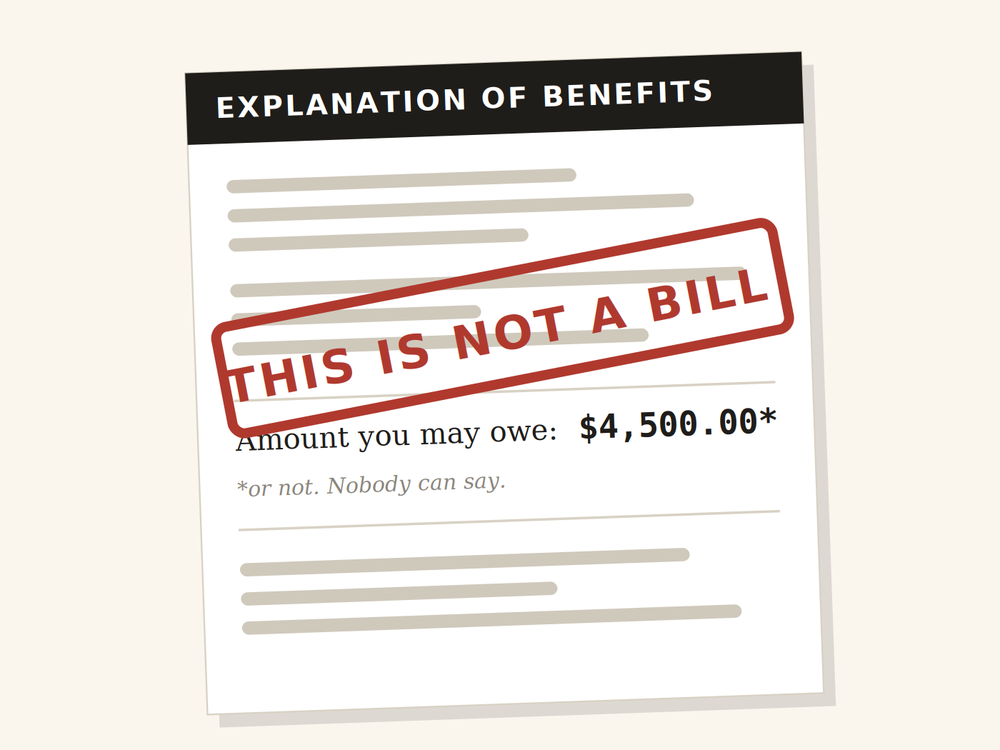
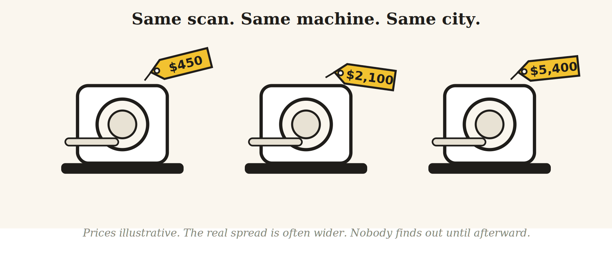
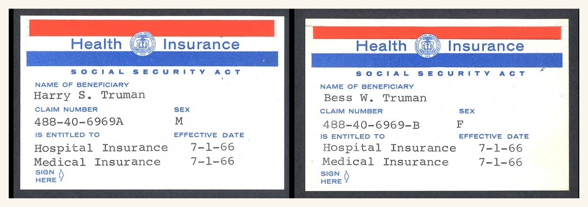
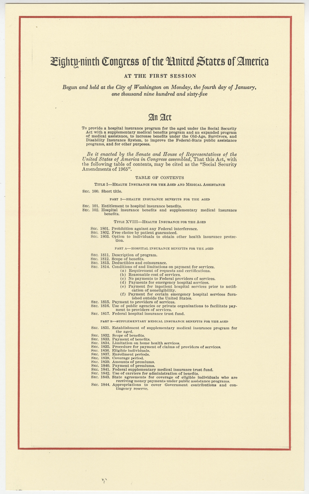
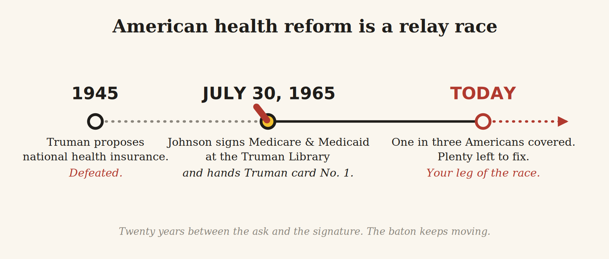

Sixty-one years ago today, on July 30, 1965, President Lyndon Johnson flew to Independence, Missouri, to sign the Medicare and Medicaid Act at the Harry S. Truman Library. He signed it there on purpose. Truman had proposed national health insurance twenty years earlier and been defeated, and Johnson wanted the old man in the room when the country finally caught up. Then he handed Truman something no other American had ever held: Medicare card number one.
I am publishing this on that anniversary on purpose. I should confess, though, that when I landed in this country a decade ago with two suitcases and an admission letter to a public health program, I had never heard of any of it. My first real encounter with American health care involved, of all things, a turtle.
The American medical billing system has a code for “struck by turtle.” It has a whole family of them, in fact (W59.22), with separate entries for the initial encounter, the subsequent encounter, and the long-term aftermath, because someone decided the system needed to know whether the turtle got you more than once. There is another code for burns caused by water skis that caught fire. I found these in my second year of graduate school, sitting alone in a common research lab space at 11 p.m., and I laughed out loud into the empty room. The echo sounded like my own inner voice agreeing with me.

Then I stopped laughing, because I thought of my friend. We had come to a different state together for graduate school, and earlier that year she had a bad fall. She could not get a clinic appointment in time, and neither of us knew yet how to navigate the system, so she did what newcomers do and went to the emergency room. She waited four hours. She got a CT scan, nothing else, and was sent home with Tylenol. The bill was $4,500. The same system meticulous enough to catalogue every conceivable turtle encounter had no better answer for a scared new arrival than a four-hour wait and a number that made no sense.
That was the night I began to suspect I was studying something much bigger than a health care system. This essay is for you, if you are about to walk into it the way I did.
Where I started
I grew up in India, where health care was mostly something you paid for in cash, at the counter, that day. When I left, Indian households were paying more than 60 percent of the country's health costs out of pocket. The figure has since fallen to around 39 percent as public insurance schemes like Ayushman Bharat expanded. It was not a system that turned people away. Every state and almost every city has government hospitals, and rural areas have public clinics, where care is free or costs very little. Public hospitals are crowded and the waits can be long, so families who can put the money together often choose private hospitals and pay cash. What both tiers shared was a virtue I did not appreciate until I lost it: you knew the price of an X-ray before anyone touched you. The rate card was taped to the wall.
Then I came to the United States and learned that here nobody can tell you what anything costs until weeks after it has already happened. Not the doctor, not the hospital, not the insurer, and certainly not the patient.
Learning the language
My first year was a vocabulary course no one told me I had enrolled in. Deductible (the amount you pay before your insurance starts paying; yes, you pay for insurance and then also pay before the insurance pays). Copay (a flat fee you pay anyway). Coinsurance (a percentage you also pay anyway). In-network (doctors your insurer has negotiated with; the anesthesiologist at your in-network hospital may still be out-of-network, a plot twist that produced so many financial catastrophes that Congress banned it with the No Surprises Act in 2022).
Then one day a document arrived in my mailbox with the words THIS IS NOT A BILL printed across the top in capital letters. It is called an Explanation of Benefits, it explains nothing, and I consider it the most honest document in American health care, because it announces up front the only thing it is sure about.

The part that shocked me
The numbers did not calm me down. The United States spent $5.3 trillion on health care in 2024, about 18 percent of its entire economy and nearly $16,000 for every man, woman, and child. That is more than the total GDP of India. The system I came here to study spends more on itself in a year than the whole economy of the 1.4 billion person country I came from produces.
For all that money, Americans live about four years less than people in comparably wealthy countries. Roughly 26 million people have no health insurance at all. Americans collectively owe at least $220 billion in medical debt, in a country where most of the people who hold that debt have insurance.
In my first months here I kept seeing links to something called GoFundMe and assumed it was some kind of supplemental insurance product. It is a crowdfunding website. Its own CEO has said that about a third of its campaigns are for medical costs, and fewer than 12 percent of those campaigns reach their goal. The wealthiest health care system on Earth runs partly on the charity of strangers scrolling on their phones.
Where does the money go, if not into longer lives? A large share goes into paperwork. The United States spends roughly twice as much on health care administration as comparable countries, by some estimates 15 to 30 cents of every health care dollar, much of it on billing, coding, prior authorizations, and the long-running argument between insurers and providers. Somewhere in that pile of paper is my friend's $4,500.
The part that made me laugh
My favorite fact in American health policy, the one I bring out at dinner parties, is that the entire employer-based insurance system is a historical accident. It is the reason your job and your health coverage are welded together, and the reason losing your job here can mean losing your doctor. During World War II the government froze wages, so employers began offering health benefits to attract scarce workers, and a 1943 tax ruling made those benefits tax-free. Nobody designed this. The load-bearing wall of American health care is a workaround from 1943 that never got renovated.
The prices are their own comedy genre. The same MRI in the same city can vary by thousands of dollars depending on which building you walk into and which insurance card is in your wallet, and the cash price is sometimes lower than the price your insurer negotiated on your behalf. In India I haggled over auto-rickshaw fares. I did not expect to move to America and find that the real haggling happens over magnetic resonance imaging, by fax, months after the scan.

The part nobody warned me about
The horror stories did not prepare me for the parts of this system that are worth admiring.
There is a federal law, EMTALA, that requires almost every emergency room in the country to screen and stabilize anyone who walks in, citizen or not, insured or not, documented or not. You may get a bill afterward, which is its own tragedy, but the door does not close on you. Coming from where I come from, I do not take that for granted.
Then there are the two programs whose birthday this essay marks. Medicare and Medicaid, Titles XVIII and XIX of the Social Security Act, today cover roughly one in three Americans between them, and half the research I do rests on their data. The detail of the 1965 story I keep returning to is the twenty-year gap. Truman asked in 1945 and lost. Johnson signed in 1965 and put Truman's name on the first card. Health reform in this country works like a relay race. Somebody is running your leg of it right now, waiting for you to arrive.

The thing that made me fall in love with this field is that America documents its own failures with a rigor I have never seen anywhere else. The federal government publishes its national health accounts going back to 1960. Claims data, hospital prices, quality scores, and disparities are all measured, archived, and handed to any graduate student with a laptop and a data use agreement. A country that measures its own flaws this carefully is a country that expects to be argued with. As a researcher, I took that as an invitation.

Why you belong here
If you are an international student about to start a public health or medicine program here, this is the sentence I needed ten years ago: your outsider's eye may be the most useful instrument you carry through customs.
You will notice things Americans have stopped noticing: that “How much will this cost?” is an unanswerable question, that a fax machine still guards the gates of modern medicine, that a person can survive cancer and then go bankrupt from surviving it. Hold on to those observations, because every one of them is a research question.
You will also be in good company. One in five physicians practicing in the United States was born and educated abroad. The wards, labs, health departments, and policy shops are full of people who learned some other system first and brought the comparison with them. This country's health system was partly built, and is held together every day, by people who started somewhere else.
A decade in, I do clinical outcomes research and health policy analysis. I spend my days in the same claims data that once made me laugh at midnight, working on the questions that turtle-code precision makes possible: who gets care, who gets better, who gets billed into ruin, and which policies change any of it. I came here to study the system. I stayed because the system, for all its absurdity, leaves the door open to people who want to fix it. That is the version of the land of opportunity I have come to believe in.
Coda
The code for “struck by turtle, initial encounter” is W59.22XA. If the turtle strikes you again, that is a subsequent encounter, W59.22XD. American health care has anticipated the possibility that you and the turtle are not finished with each other.
Today is July 30, though, and the anniversary is proof that the absurdity is not permanent. This system was remade in a single afternoon in Missouri, on a promise that took twenty years to keep. It will be remade again by people who noticed what was wrong and chose to stay anyway.

The turtle and I are not finished either. Welcome. There is work to do.